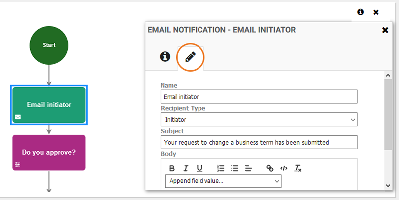
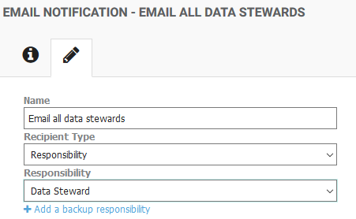
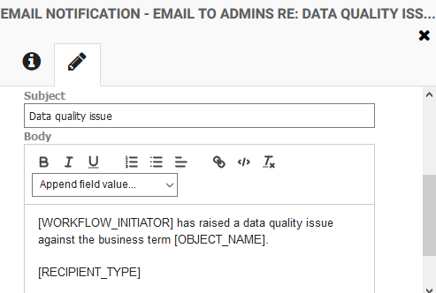
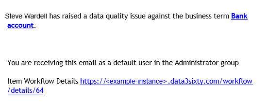

|
|
Configuring email notifications
Tip: This topic describes how to configure the Email Notification workflow activity when you are building a workflow. For information on configuring emails that are sent to users with open workflow assignments, see Sending workflow assignment emails.
When creating a workflow, you have the option to include an Email Notification activity. The Email Notification activity allows you to send an email to a specific role or user as part of your workflow.
You can access the workflow editing page by clicking the Administration icon on the left of the screen and selecting Workflow > Workflow. For more information on creating a new workflow, see Establishing workflows.
If you are building a workflow that includes an Email Notification activity, you can customize the email as follows:
- Select the Email Notification activity, then in the Email Notification information panel, click the Edit tab to configure the email:

Tip: If the Email Notification panel does not open automatically, select the Email Notification activity, then click the Information icon in the top right corner of the workflow editing area.
- Type a Name for the workflow step, for example "Email initiator".
- Select a Recipient Type to determine who the email should be sent to. Choose from:
- Initiator - Sends an email to the user who triggers the workflow step.
- Responsibility - Sends an email to all users who have been assigned to a particular role. If you select this option, a second Responsibility field will appear where you can select the name of the responsibility, such as Data Steward or Business Owner:

You can click Add a backup responsibility to define a second responsibility type. In this case, the system will initially look for users assigned to the first responsibility, but if there are no users assigned to that responsibility, the system will look for users assigned to the second responsibility and send the email notification to them instead. For example, if there are no Data Stewards, send the form to the Business Owner.
- Specific User - Sends an email sent to a specific email address. When this option is selected, a Recipient field will display where you should enter the email address of the individual or group that you want to send the email to, for example user@example.com, or financeusers@example.com.
- Type a Subject for the email, for example, an email to an initiator may have the subject "Your request has been received".
- Type the Body of the email. You may want to include a note about why the user is receiving a notification, for example, you may be notifying all data stewards that a new Business Term has been added to the system. You can add specific details about the item that the workflow has been triggered against by selecting a token from the Append field value list. A token is a placeholder that will be replaced with the relevant item details in the email. Choose from:
- [OBJECT_NAME] - The name of the object that the workflow step was triggered by. For example, the name of a new Business Term that was added to the system.
- [OBJECT_TYPE] - The type of the object that the workflow step was triggered by. For example, Business Term.
- [SCORE] - The Governance score of the item, if a score has been calculated.
- [WORKFLOW_INITIATOR] - The name of the user who initiated the workflow.
- [ACTION_DETAILS] - The action details, including; the action type (for example, "Data quality issue"), the item that the action was raised against (for example, a specific business term), the criticality level and any description details provided by the user who raised the action.
Note: The [ACTION_DETAILS] token is only relevant if the workflow is an Action Type workflow. This token should not be used for other workflow types.
- [RECIPIENT_TYPE] - Provides the recipient with the reason that they have received the notification. For example, if you have configured the workflow to notify all users who are assigned to a particular role, you can use this token to notify users that they have received the email because they are a member of a specific group. The text that replaces this token in the email varies depending on the value set in the Recipient Type field (step 3):
- If the Recipient Type is Specific User the token is replaced with "Specific User" in the email.
- If the Recipient Type is Initiator the token is replaced with "Initiator" in the email.
- If the Recipient Type is a selected Responsibility, the email message is "You are receiving this email as a default user in the <responsibility> group". This message format also applies when the notification is sent to the default Administrator group.
Tip: You can copy and paste a token from the Body of the email into the Subject field if needed.
For example, in the following Email Notification activity, three tokens have been added to the body of the email, [WORKFLOW_INITIATOR], [OBJECT_NAME] and [RECIPIENT_TYPE]:

An email generated by this workflow step would have the following format, where:
- The [WORKFLOW_INITATOR] token has been replaced by the user's name, in this example "Steve Wardell".
- The [OBJECT_NAME] token has been replaced by the name of the business term, in this case "Bank account".
- The [RECIPIENT_TYPE] token has been replaced with a sentence informing the user that they are receiving the email because they are a member of the Administrator group.

- Select Include previous form responses if the workflow contains a preceding form step and you want to include a copy of the completed form in the email.